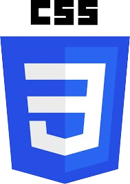
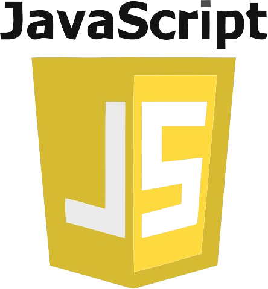
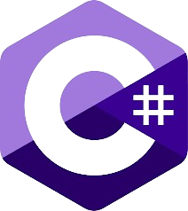
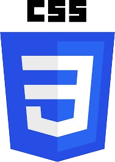
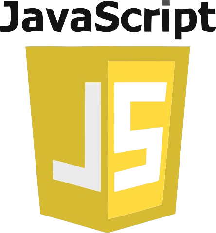
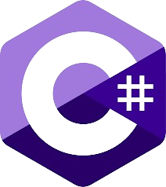

Total Visitors ( 0 )
Hello Ladies & Gentlemen
Name | Reynard Cayetano
Hi ImLet's build your imagination become to Reality
Hello Good day ahead aspiring Developers & Visitors I'm Reynard Cayetano 24 years old aspiring Software Engineer
& Web Developer from Muntinlupa city I love About technology and i love to build application Website and As a
Self-taught Developer I have a lot I want to learn About IT Industry and I am passionate and have perseverance
in what I do. I like to solve problems. I am the type of person who likes to study and learn different things.
My goal now is to become a Software Engineer for aspiring Developers like me. At first it was difficult.
Everything if you do it every day you will get used to what you do, you need to have love for what you do to
speed up your process
About me ~
Programing Stacts |
 




